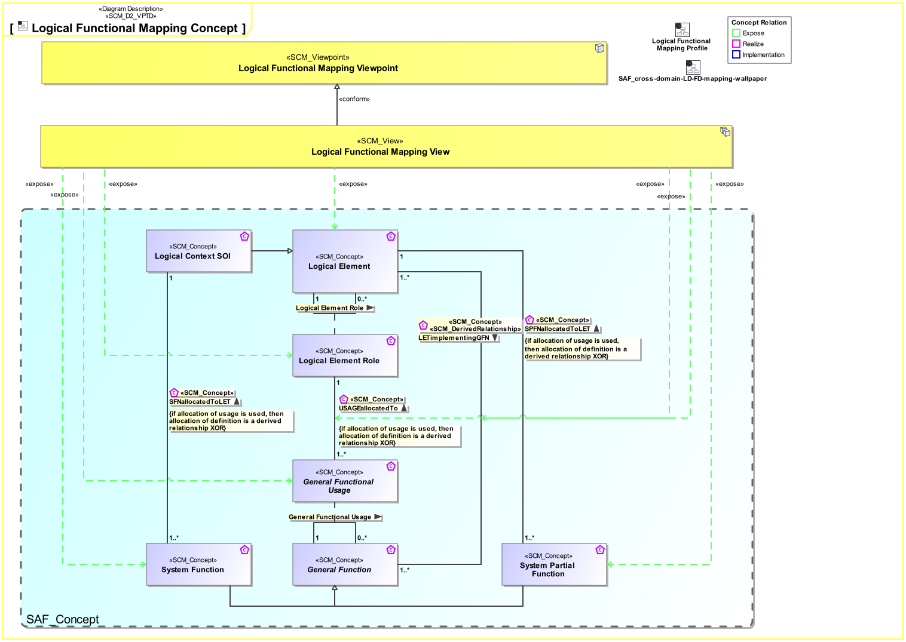
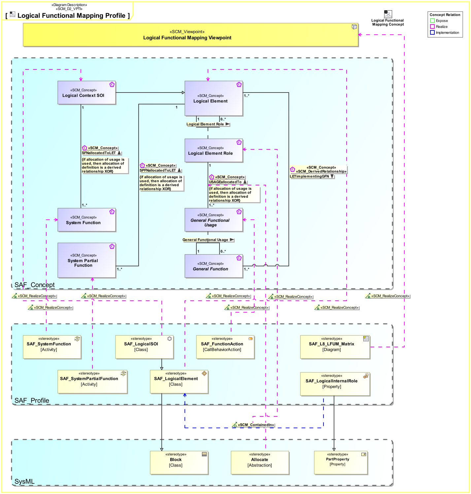

L8_LFUM Logical Functional Mapping Viewpoint
| Domain | Aspect | Maturity |
|---|---|---|
| Logical | Traceability & Mapping |

The Logical Functional Mapping Viewpoint supports the definition of assignment of system functions and system partial functions to logical system elements.
The Logical Functional Mapping Viewpoint supports the “System Architecture Definition Process” activities of the INCOSE SYSTEMS ENGINEERING HANDBOOK 2023 [§2.3.5.4] and contributes to the artifact “Traceability Mapping”.
Furthermore, the Logical Functional Mapping Viewpoint supports the “Allocation and Partitioning of Functional Entities to Logical Entities” activities.
A FBS to LBS mapping matrix featuring
The following Stereotypes / Model Elements are used in the Viewpoint:
The Diagram shows the concepts exposed by the viewpoint, and related concepts if necessary.

| Concept | Documentation |
|---|---|
| General Functional Usage | Specifies a General Usage of a General Function within one or more other General Functions. |
| Logical Element Role | Specifies the fact that a logical element comprises logical elements. |
| System Function | Specifies the fundamental action or task that have to take place in the System in accepting and processing the inputs and in processing and generating the outputs. A System Function * accepts input from the System boundary * exposes its output at the System boundary * changes the System's State * is dependent on System's State Note: A System Function does not need to expose observable output, when it changes the System's state in a way that is observable by other system functions. Furthermore, a System Function does not need to accept any input from the system boundary, when it is dependent on the System State, which in turn is changeable by other System Functions. |
| System Partial Function | Specifies the fact that a System Partial Function is a decomposed part of a System Function and defines details of the System Function it belongs to. |
| USAGEallocatedTo | Specifies the fact that a Usage of Function is allocated to a Usage of System Element. |
| LETimplementingGFN | Specifies the fact that a Logical Element is responsible to implement a System Function. Note: Logical Elements don't "implement" anything, they pass the function implementation task to Physical Elements. |
| Logical Element | Describes a conceptual Logical Element as specification for an implementation of a system, or system element. |
The Diagram shows the implementation of exposed concepts.
